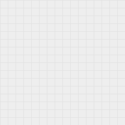
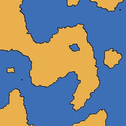
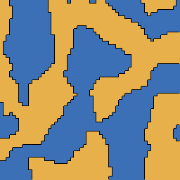
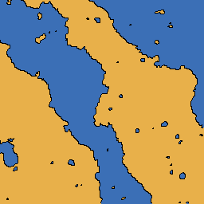
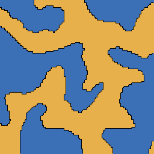
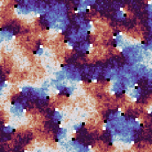
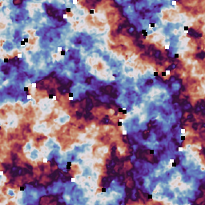
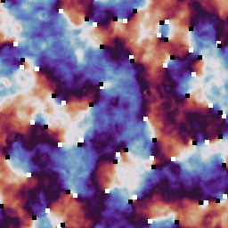
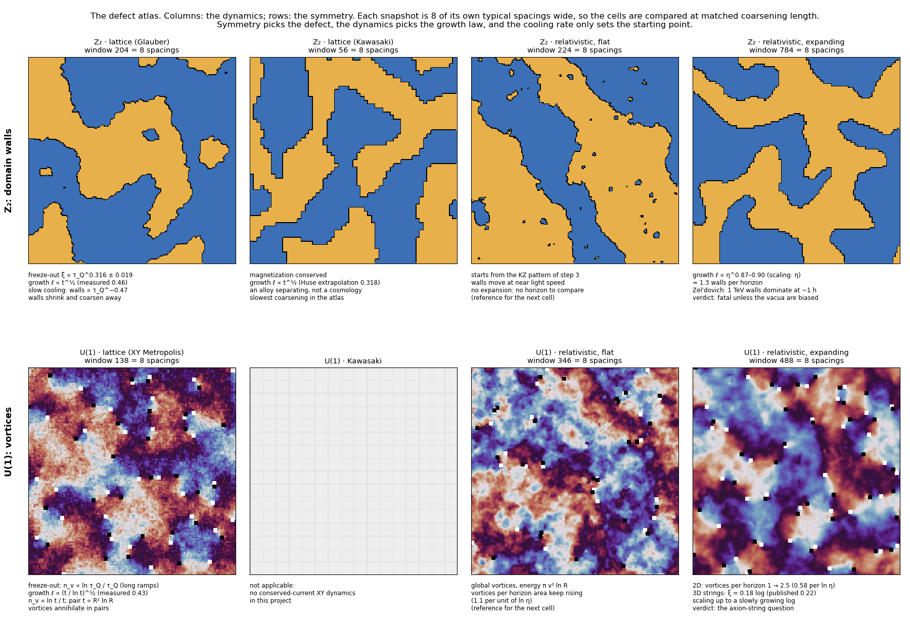
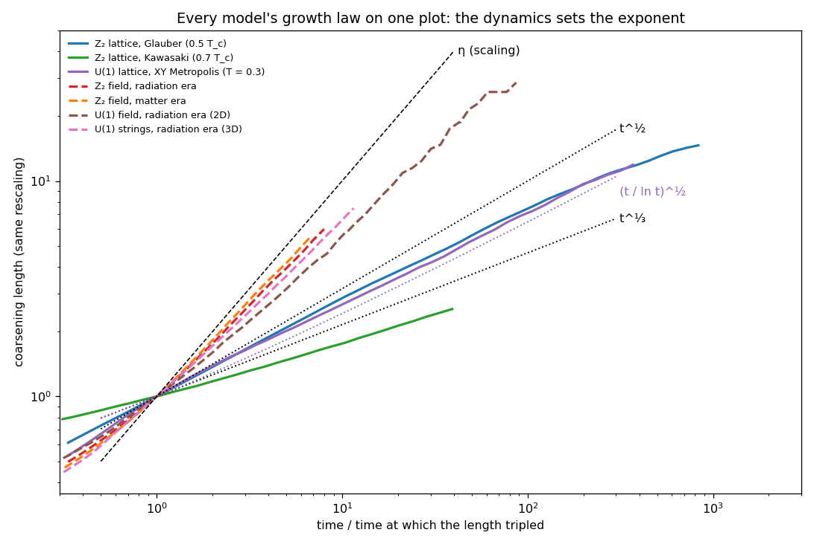

U(1) · Kawasaki
not applicable: no conserved-current XY dynamics here
When the early universe cooled through a symmetry-breaking transition, it left topological defects: domain walls, vortices and cosmic strings. Whether they are harmless, observable or fatal depends on what the transition made and what happened to it afterwards. One lattice engine and one field code, with each knob turned in turn.
Two symmetries, four kinds of dynamics. Each cell shows its model at matched coarsening length, a window eight of its own typical spacings wide, with its defect card. Click a cell for its story. Symmetry picks the defect, the dynamics picks the growth law, and the cooling rate only sets the starting point.









Each model's typical defect spacing against time, rescaled so the curves meet where the spacing first triples. Lattice walls grow as t½, conserved ones as t⅓, lattice vortices as (t / ln t)½; relativistic defects in an expanding universe keep pace with the horizon, η.

One lattice engine, with each knob turned one at a time. Every model gets a defect card with four entries: the freeze-out exponent, the growth law ℓ(t) ∝ tn, the late-time defect density, and a cosmological verdict.
| Knob | Settings | What it controls |
|---|---|---|
| Symmetry | Z₂ (Ising) vs U(1) (XY) | The kind of defect: domain walls, or vortices (strings in 3D) |
| Cooling rate | Quench time τQ, ~30 to 10⁴ sweeps | How many defects form (Kibble–Zurek) |
| Dynamics | Dissipative, conserved, relativistic | How the network coarsens afterwards |
| Background | Flat vs expanding | Whether the network scales with the horizon |